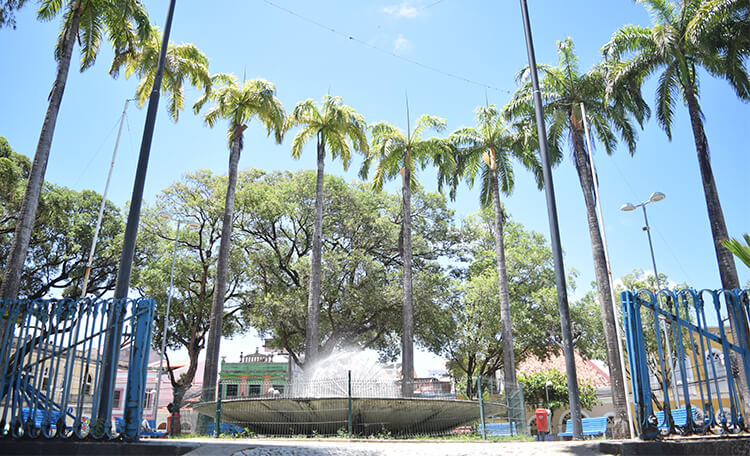
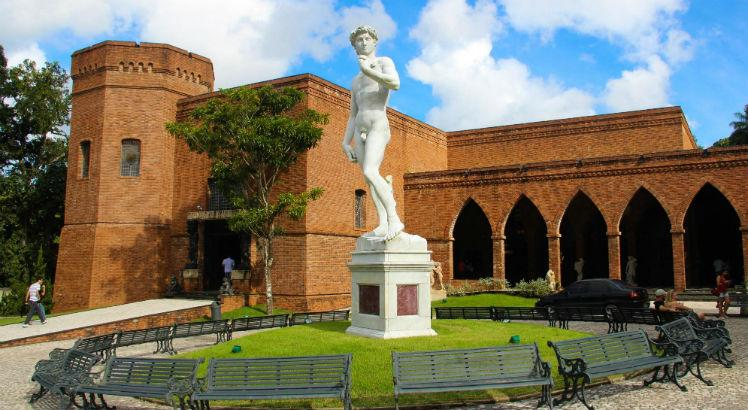

O que eu mais gosto em Recife
Passear no Marco Zero!

O Marco Zero, na Praça Rio Branco, é conhecido como local de fundação da cidade do Recife e também como ponto inicial de contagem das distâncias calculadas a partir da cidade. O lugar é um dos pontos mais importantes na capital Pernambucana, pois é também uma região de forte movimento durante o Carnaval. Aproveite sua visita para tirar uma foto com os dois marcos (o antigo e o novo), observar a vista para o Parque de Esculturas e os edifícios do Centro Cultural da Caixa e da Associação Comercial de Pernambuco. Se quiser fazer compras, vale a pena visitar o novo Mercado de Artesanato, que também fica no local.
Praça do Arsenal
A praça foi projetada pelo paisagista Roberto Burle Marx e é composta por várias Palmeiras Imperiais, além de contar, com uma bela fonte. No entorno é possível observar na região norte a Capitania dos Portos, do lado leste a Torre Malakof (Construída no século XIX para servir como observatório astronômico), ao sul é possível observar o Paço do Frevo (Um dos principais museus da cidade do Recife, que faz alusão ao frevo), na Zona Oeste, da praça, encontra-se a Central de Atendimento ao Turista e a Embaixada Pernambucana (Museu de bonecos de cera).
Instituto Ricardo Brennand,e
O Instituto Ricardo Brennand, localizado na Várzea, Zona Oeste do Recife, é um dos pontos turísticos mais requisitados da capital pernambucana. Com sua arquitetura que evoca a arquitetura medieval europeia, o museu guarda preciosidades das artes plásticas, assim como documentos raros e uma das maiores coleções de armas brancas do mundo. Sua criação é fruto da paixão de Ricardo Brennand, falecido sábado (25), vítima de complicações causadas pela covid-19, pela arte e o colecionismo. Em decorrência da pandemia do novo coronavírus, o espaço está fechado deste o dia 14 de março.
E existem muitos outros lugares interessantes na cidade...
- Museu Cais do Sertão.
- Paço do Frevo.
- Os estádios dos principais times de futebol da cidade.
- Torre Malakoff.
- E mais!